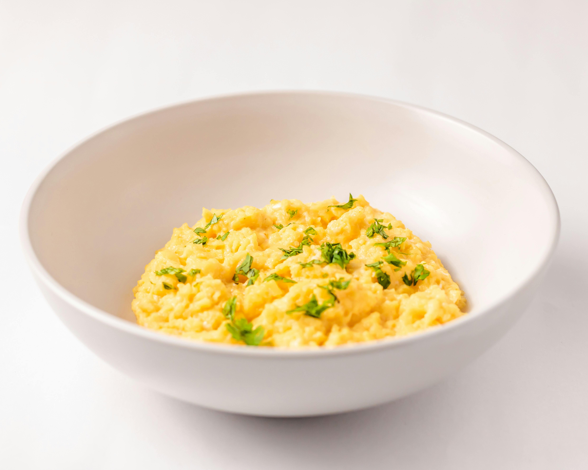

Home
Scrambled Eggs Recipe

Description
A tasty breakfast dish that can be made in
under five minutes.
Ingredients
- Milk (1 tsp)
- 2 eggs
- Vegetable oil
Steps
- Add eggs and milk to a mixing vessel (like
a bowl or a large cup) and stir until
combined.
- Brush a nonstick pan with oil and heat
it over medium heat.
- Pour in the mixture. Stir the eggs with a
spatula every few seconds, scraping along
the bottom and edges of the pan.
- When the eggs start looking like
soft curds, remove the pan from the heat.
- Done.